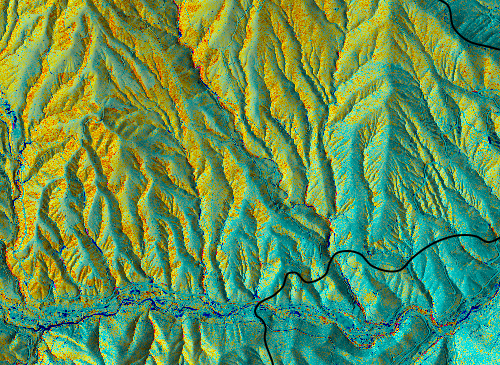
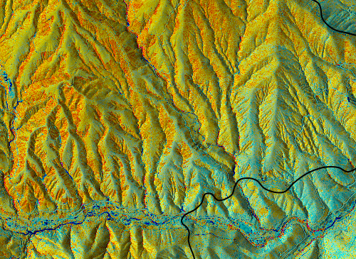
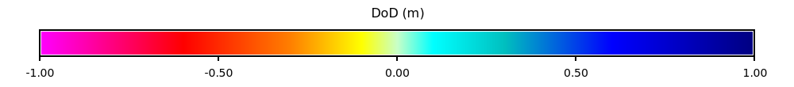

Part 01 ended with a naive DoD that reads about 10 cm high on ground that did not burn, with a color pattern on the hillslopes that follows aspect. In this part we measure that error on stable ground, remove the offset between the two lidar collections with r.dem.nk, and check whether pre-fire vegetation leaves a bias worth correcting.
Every correction in this part is estimated on ground we expect did not change between 2013 and 2022. Here that means cells that are outside the fire perimeter, sloped between 2 and 45 degrees, and more than 10 m from a channel, since channels carry real deposition and scour.
Now the numbers to beat. The median is the systematic offset and the NMAD (normalized median absolute deviation) is the noise, both measured where the true change should be zero.
before = stable_stats(tools, "dod_naive", "stable")print(f"Naive DoD on stable ground: median {before['median']:+.3f} m, NMAD {before['nmad']:.3f} m")
Naive DoD on stable ground: median +0.097 m, NMAD 0.078 m
Horizontal and vertical offset
A horizontal shift between two DEMs shows up as an elevation error that depends on slope and aspect. r.dem.nk fits the Nuth and Kaab (2011) model to that pattern on the stable cells and returns the shift. We align the 2013 DTM to the 2022 reference, since the 2022 collection is the newer, higher-specification survey.
# sfm= is the surface to move, here the 2013 lidar DTM, and lidar= is the# reference it is aligned to.tools.r_dem_nk( sfm="dtm_2013", lidar="dtm_2022", stable_mask="stable", output="dtm_2013_nk", transform_output="nk_transform.txt",)offsets = {}withopen("nk_transform.txt") as f:for line in f:if"="in line: key, value = line.strip().split("=") offsets[key] =float(value)horizontal = np.hypot(offsets["dx"], offsets["dy"])print(f"dx {offsets['dx']:+.3f} m, dy {offsets['dy']:+.3f} m, dz {offsets['dz']:+.3f} m")print(f"Horizontal shift: {horizontal:.2f} m")
dx -0.036 m, dy -0.039 m, dz -0.086 m
Horizontal shift: 0.05 m
The horizontal shift is about 5 cm, a twentieth of a cell. In a nearest-cell DoD the same fit finds about 0.35 m, almost all of it the grid offset that part 01 resampled away. The vertical offset of about 9 cm is larger than the 2 to 3 cm geoid difference from part 01, so the geoid change explains only part of it. An iterative closest point fit with r.dem.icp on the same mask points the same way, with about 8 cm horizontal and 10 cm vertical. The two methods differ by about 3 cm, close to the size of the horizontal shift itself, so the vertical offset is well resolved and the horizontal one is small and uncertain.
The small shift also settles the datum question from part 01. If the 2013 data were on the original NAD83, the fit would find a shift near 0.6 m. It finds 5 cm, so applying the NADCON5 grid shift would have added error, not removed it.
Difference the aligned 2013 DTM against 2022 with r.dem.dod. Both DoDs use range=1 so they share one color scale.
median NMAD
naive +0.097 0.078
r.dem.nk +0.009 0.075
for name in ("dod_naive", "dod_nk"): dod_map = gj.Map(width=500) dod_map.d_shade(shade="dtm_2022_relief", color=name) dod_map.d_vect(map="mckinney_perimeter@PERMANENT", fill_color="none", color="black", width=2 ) dod_map.show()# One legend for both maps.legend = gj.Map(width=1000, height=110)legend.d_legend( raster="dod_nk", title="DoD (m)",range=(-1, 1), at=(35, 65, 5, 95), flags="st", fontsize=14, title_fontsize=16,)legend.show()

(a) Naive DoD

(b) After r.dem.nk

(c) Legend for both maps
Figure 1: The DoD before and after co-registration, on one color scale
The median drops from about +0.10 to +0.01 m, while the NMAD barely moves. A vertical offset moves every cell by the same amount, and the horizontal shift is small, so removing them recenters the error without narrowing it.
All of the stable ground sits in the eastern part of the region, and much of the burn lies west of it. The offsets are fit there and applied everywhere. A tilt between the two surveys would not show up in this fit and would grow with distance from the stable ground, so keep that in mind when reading the volumes in parts 03 and 04.
To check the horizontal part, plot the stable-ground error divided by the tangent of slope against aspect. A horizontal shift traces a cosine in this plot, and a vertical offset lifts the whole curve.
Before co-registration the curve sits high, which is the vertical offset, with a gentle cosine on top. After r.dem.nk it sits near zero with a few centimeters of wiggle left.
Vegetation
Pre-fire canopy can bias a DTM. Dense canopy leaves fewer ground returns, so the 2013 bare-earth surface is interpolated over larger gaps than the 2022 surface flown after the fire. The 2013 highest-hit surface minus the bare-earth surface gives canopy height. A few highest-hit returns are blunders hundreds of meters up, so heights above 70 m are dropped.
tools.r_import(input=str(RAW /"usfs_2013_dsm.tif"), output="dsm_2013_native", extent="region")# The highest-hit surface sits on its own offset grid, so resample it like the DTM.tools.r_resamp_interp(input="dsm_2013_native", output="dsm_2013", method="bilinear")tools.r_mapcalc( expression=("canopy_2013 = if(dsm_2013 - dtm_2013 > 70, null(), ""max(dsm_2013 - dtm_2013, 0))" ))tools.r_mapcalc(expression="forest = if(canopy_2013 > 2, 1, null())")tools.r_mapcalc( expression="stable_forest = if(!isnull(stable) && !isnull(forest), 1, null())")tools.r_mapcalc( expression="stable_open = if(!isnull(stable) && isnull(forest), 1, null())")tools.r_mapcalc( expression="burned_forest = if(burned == 1 && !isnull(forest), 1, null())")for label, mask in ( ("stable forest", "stable_forest"), ("stable open", "stable_open"), ("burned forest", "burned_forest"),): stats = stable_stats(tools, "dod_nk", mask)print(f"{label:14} median {stats['median']:+.3f} m, NMAD {stats['nmad']:.3f} m, cells {stats['n']}" )
stable forest median -0.005 m, NMAD 0.085 m, cells 306818
stable open median +0.017 m, NMAD 0.066 m, cells 475750
burned forest median -0.115 m, NMAD 0.111 m, cells 2349146
On stable ground, forest and open cells differ by about 2 cm. Burned forest reads about 12 cm lower, which is change we want to keep.
r.dem.biasmethod=forest estimates a local median under a canopy mask and subtracts it. Applied to burned forest, it would remove that 12 cm along with any bias, because a local median cannot tell the two apart. method=regression instead fits the bias to terrain and canopy predictors on stable ground only and predicts it everywhere, which keeps real change out of the fit.
tools.r_dem_bias( dod="dod_nk", output="dod_debiased", method="regression", predictors="slope_2013,canopy_2013", stable_mask="stable", bias_field="bias_regression", fit_json="bias_fit.json",)withopen("bias_fit.json") as f: fit = json.load(f)print("Intercept:", round(fit["intercept"], 4))for name, value in fit["coefficients"].items():print(f"{name:12}{value:+.4f} m per standard deviation")debiased = stable_stats(tools, "dod_debiased", "stable")print(f"Stable ground after regression: median {debiased['median']:+.3f} m, NMAD {debiased['nmad']:.3f} m")
Intercept: 0.0056
slope_2013 -0.0112 m per standard deviation
canopy_2013 +0.0057 m per standard deviation
Stable ground after regression: median +0.004 m, NMAD 0.076 m
The regression changes the stable-ground median by millimeters. After co-registration there is little vegetation bias left to remove at this site, and measuring it first is how you know. Part 03 starts from dod_debiased.
Your turn
The stable mask decides what r.dem.nk sees. Rebuild it without the burn and channel conditions, rerun r.dem.nk, and compare the offsets with the ones above. Change and channels pull the fit toward the real surface change.
Then solve the same alignment with r.dem.icp, which matches the surfaces point to plane instead of fitting the aspect pattern. Its signs are reversed because it reports the transform applied to the 2013 DTM.